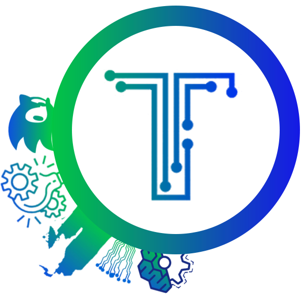

Techsurge
The Technical Fest

Techsurge focuses on the technical aspect and incorporates numerous technical events, revealing a fun side to the cyber world. The most popular events of Techsurge are Coding Contest, Internship Fair, Ethical Hacking etc.
Learn More